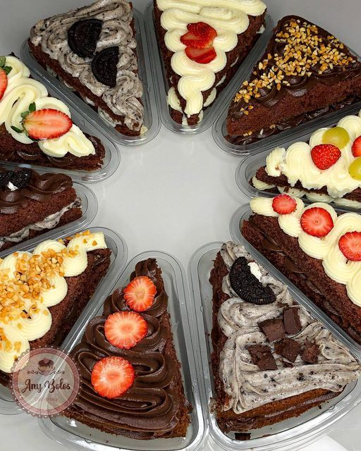

Postres con frutas
Las frutas aportan color y sabor a diferentes postres. Se pueden utilizar frescas, cocidas o como parte de una salsa.

Frutas que se utilizan en repostería
- Fresas
- Duraznos
- Banano
- Frutos rojos
| Postre | Fruta principal | Presentación |
|---|---|---|
| Tarta | Fresas | Fruta fresca encima |
| Gelatina | Durazno | En cubos |
| Batido | Banano | En vaso frío |
| Cheesecake | Frutos rojos | En salsa |